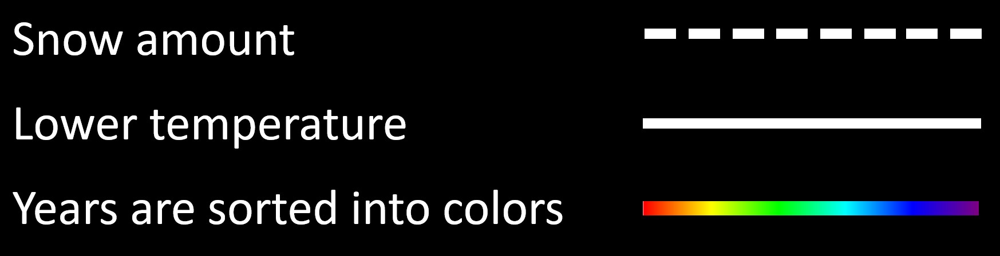

Over the last few years the amount of snow in Copenhagen has been on a steady descrease. Why is this? Does it have something to do with the weather? And how much snow was there actually in 2014 compared to 2020?
All these questions can be answered when playing around with this data Visualisation.
Under here the Visualisation can be seen. If you want to see specific years, click the "Winter" buttons on top. If you want to get inspired you can click the blue text in the bottom right. You can also hover on graphs to see them highlighted.
Source: https://www.dmi.dk/vejrarkiv